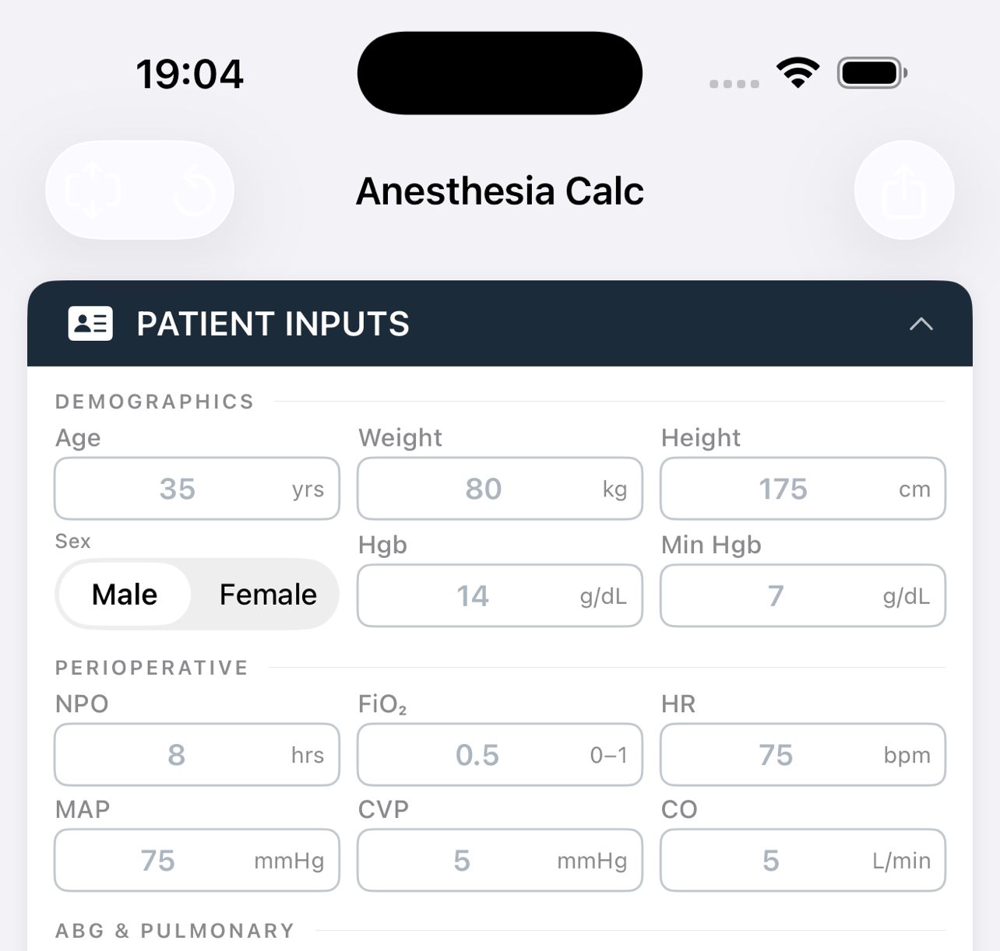
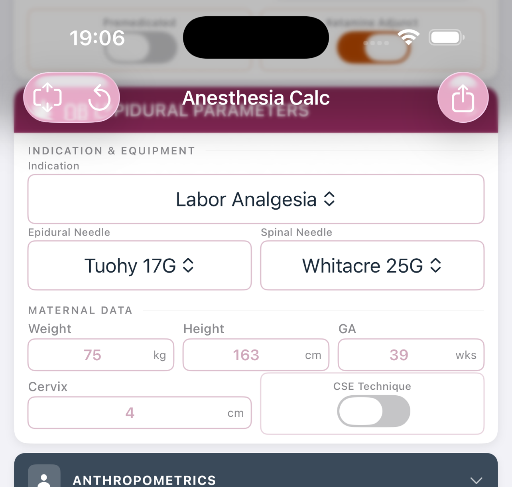
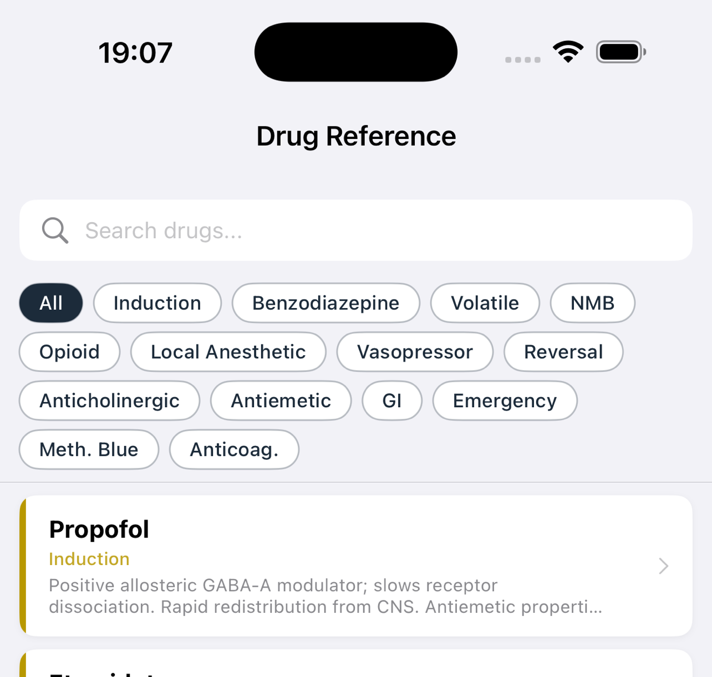

¹²Burrell College School of Osteopathic Medicine, Class of 2027 — ¹Las Cruces, NM · ²Albuquerque, NM
A third-year medical student engaged a conversational AI assistant (Claude, Anthropic) in an iterative development session to design and build a comprehensive anesthesia clinical decision support platform, with no prior software engineering experience. All AI-generated drug dosing, pharmacokinetic parameters, and clinical protocols were independently verified against UpToDate prior to inclusion.
The workflow proceeded in three phases: structured requirements elicitation across 14 clinical domains; a Microsoft Excel prototype with 116 live formulae as a validated reference layer; and a native iOS/iPadOS SwiftUI application (iOS 17+) incorporating all calculation domains, a TIVA module with Marsh/Schnider propofol pharmacokinetic modeling, a labor and regional obstetric module with five indication-specific protocols, and a searchable drug reference library. Debugging followed a patch-based workflow in which Xcode compiler errors were submitted verbatim to the AI and resolved across targeted iterations.
A fully functional, offline-capable native iOS application was produced without the student writing a single line of code, compiling and running on physical iPhone and iPad hardware across seven discrete compiler-error resolution cycles. All dosing outputs were confirmed accurate against UpToDate references, including age-corrected MAC algorithms, weight-based pediatric dosing, and obstetric-specific vasopressor guidance.
This case demonstrates that AI-assisted vibe coding may democratize clinical software development beyond attending-level practitioners. Independent verification against established clinical references is feasible within this workflow and essential for safe deployment. Early trainees may be uniquely positioned to leverage AI-assisted development, translating emerging clinical knowledge into validated bedside tools during training itself.
Large language model (LLM)-based AI has introduced a software development paradigm termed "vibe coding": domain experts without formal programming training direct AI to iteratively generate, debug, and refine production-ready code through natural language. The bottleneck moves from programming skill to clinical domain expertise. The application shown here is a worked example.
Steps 4–6 repeat until the prototype meets requirements.
A native iOS anesthesia calculator, built end to end through this workflow.



An external reviewer independently audited every calculation. Each entry passed through triage, a targeted deep dive, then a full independent literature search — cross-referenced against UpToDate, Miller's 9e, and Barash 8e. All confirmed discrepancies were corrected before the version was finalized.
The workflow is replicable, making this a viable option for the future of clinical workflow program design. The same six steps apply to almost any clinical need: custom calculators and order-set helpers inside the EMR, desktop widgets for rapid reference at the workstation, anesthetic plan generators from structured case data, custom case simulators for resident training, and departmental protocol, checklist, and QI dashboards.
AnesCalc v2.0 walkthrough — patient inputs, live calculations, drug reference library, and PDF export.
The authors thank Emily Waddle, Class of 2029 at Burrell College School of Osteopathic Medicine, NM, for technical data support during the external UpToDate reference validation and algorithmic verification phases.